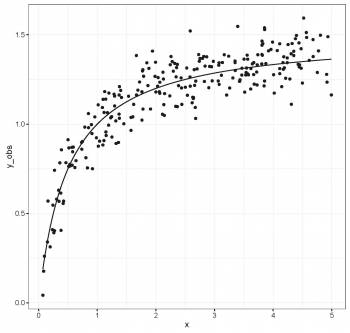
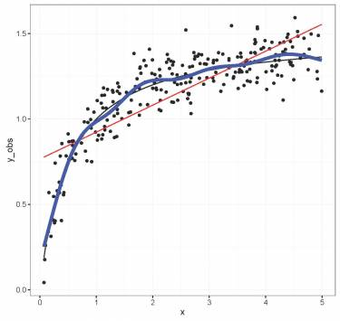
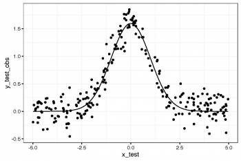

Chapitre 4 Introduction aux GAMs
Examinons un exemple. Premièrement, nous allons générer des données et les représenter graphiquement.
library(ggplot2)
set.seed(10)
n = 250
x = runif(n, 0, 5)
y_model = 3 * x/(1 + 2 * x)
y_obs = rnorm(n, y_model, 0.1)
data_plot = qplot(x, y_obs) + geom_line(aes(y = y_model)) + theme_bw()
print(data_plot)
Si nous modélisions cette relation par une régression linéaire, les
résultats ne respecteraient pas les suppositions énumérées ci-dessus.
Commençons par modéliser une régression en utilisant la méthode des
moindres carrés en utilisant la fonction gam() de la librairie mgcv
- donc en tant que modèle linéaire (nous verrons plus bas comment
utiliser cette fonction pour spécifier un terme non linéaire).
library(mgcv)
linear_model = gam(y_obs ~ x)
model_summary = summary(linear_model)
print(model_summary)
data_plot = data_plot + geom_line(colour = "red", aes(y = fitted(linear_model)))
print(data_plot)Nous pouvons constater à partir du sommaire que notre modèle linéaire explique une grande partie de la variance (R2adj = 0.639). Toutefois, les graphiques de diagnostic des résidus du modèle montrent que l’écart type ne suit pas une distribution normale et que la variance n’est pas homoscédastique. De plus, il reste un patron non-linéaire important. Essayons maintenant de résoudre ce problème en ajustant les données avec un terme non linéaire.
Nous reviendrons sur ceci un peu plus tard, mais brièvement, les GAMs sont une forme non paramétrique de la régression où le βxi d’une régression linéaire est remplacé par une fonction de lissage des variables explicatives, f(xi), et le modèle devient :
\[y_i = f(x_i) + ε_i\]
où yi est la variable réponse, xi est la covariable, et f est la fonction lissage.
Étant donné que la fonction de lissage f(xi) est non linéaire et
locale, l’ampleur de l’effet de la variable explicative peut varier en
fonction de la relation entre la variable et la réponse. Autrement dit,
contrairement à un coefficient fixe βxi, la fonction f
peut changer tout au long du gradient xi. Le degré de lissage de f
est contrôlée en utilisant une régression pénalisée qui est déterminée
automatiquement à l’aide d’une méthode de validation croisée
généralisée (GCV) de la librairie mgcv (Wood 2006).
Avec gam() les termes non linéaires sont spécifiés par des expressions
de la forme: s(x).
gam_model = gam(y_obs ~ s(x))
summary(gam_model)
data_plot = data_plot + geom_line(colour = "blue", aes(y = fitted(gam_model)))
print(data_plot)La variance expliquée par notre modèle a augmenté de 20% (R2adj = 0.859) et quand on compare l’ajustement du modèle linéaire (rouge) au modèle non-linéaire (bleu), il est clair que l’ajustement de ce dernier est relativement meilleur.

La librairie mgcv comprend également une fonction plot qui, par
défaut, nous permet de visualiser la non-linéarité du modèle.
Comment utilisons-nous les GAMs pour savoir si un modèle linéaire est
suffisant pour modéliser nos données ? Nous pouvons utiliser les
fonctions gam() et anova() pour tester formellement si une hypothèse
de linéarité est justifiée. Nous devons simplement le configurer de
sorte que notre modèle non-linéaire est emboîté dans notre modèle
linéaire; c’est à dire, nous devons créer un objet qui inclut à la fois
x (linéaire) et s(x) (non-linéaire). En utilisant la fonction
anova(), on vérifie si l’ajout de s(x) au modèle avec seulement x
comme covariable est justifié par les données.
linear_model = gam(y_obs ~ x)
nested_gam_model = gam(y_obs ~ s(x) + x)
print(anova(linear_model, nested_gam_model, test = "Chisq"))Le terme non linéaire est significatif:
Analysis of Deviance Table
Model 1: y_obs ~ x
Model 2: y_obs ~ s(x) + x
Resid. Df Resid. Dev Df Deviance Pr(>Chi)
1 248.00 6.5846
2 240.68 2.4988 7.3168 4.0858 < 2.2e-16 ***
---
Signif. codes: 0 ‘***’ 0.001 ‘**’ 0.01 ‘*’ 0.05 ‘.’ 0.1 ‘ ’ 14.1 DÉFI 1
Nous allons maintenant essayer cela avec d’autres données générées
aléatoirement. Nous allons d’abord générer les données. Ensuite, nous
allons ajuster un modèle linéaire et un GAM à la relation entre x_test
et y_test_obs. Quels sont les degrés de libertés effectifs du terme
non-linéaire ? Déterminez si l’hypothèse de linéarité est justifiée
pour ces données.
n <- 250
x_test <- runif(n, -5, 5)
y_test_fit <- 4 * dnorm(x_test)
y_test_obs <- rnorm(n, y_test_fit, 0.2)4.1.1 Réponse au défi 1
data_plot <- qplot(x_test, y_test_obs) + geom_line(aes(y = y_test_fit)) +
theme_bw()
print(data_plot)
linear_model_test <- gam(y_test_obs ~ x_test)
nested_gam_model_test <- gam(y_test_obs ~ s(x_test) + x_test)
print(anova(linear_model_test, nested_gam_model_test, test = "Chisq"))
summary(nested_gam_model_test)$s.tableAnalysis of Deviance Table
Model 1: y_test_obs ~ x_test
Model 2: y_test_obs ~ s(x_test) + x_test
Resid. Df Resid. Dev Df Deviance Pr(>Chi)
1 248.0 81.09
2 240.5 7.46 7.5012 73.629 < 2.2e-16 ***
---
Signif. codes: 0 ‘***’ 0.001 ‘**’ 0.01 ‘*’ 0.05 ‘.’ 0.1 ‘ ’ 1
edf Ref.df F p-value
s(x_test) 7.602145 8.029057 294.0944 0Réponse: Oui la non-linéarité est justifiée. Les degrés de libertés effectifs (edf) sont >> 1.
